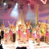
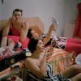

Galeria demnitarilor agramaţi, căţăraţi la cel mai înalt nivel politic, se îmbogăţeşte pe zi ce trece. Seducătorul Daniel Chiţoiu, Ministrul Economiei, se alătură iluştrilor predecesori: Liviu Pop – analfabetul absolut, Mihail Boldea – deputatul Răifaizăn Băi Mercier şi chiar Victor Ponta, premierul Xerox cu stropitoare de virgule. “Vanghelizarea” politicii româneşti pare de neoprit. I-am putea [...]
Zilele astea maimuţa textier a prestat din greu ore suplimentare ca să acopere nevoile mulţimii de vedete în devenire de la festivalul Bunicuţa Plozilor Mamaia Copiilor. Folosind ca sursă de inspiraţie nemuritoarele şlagăre ale Epocii de Aur, primata cu veleităţi de compozitor a zămislit idei remarcabile precum “eu vreau să cânt”, “muzica e viaţa mea-a-a-a, voi [...]

Victor Ponta, premierul României şi grecul Alexis Tsipras, conducătorul coaliţiei radicale de stânga SYRIZA, mişcare anti-europeană, au reuşit performanţa de a emite două declaraţii politice trase la indigo. Ambii sfidează executivul german şi Uniunea Europeană, mizând pe sprijin popular naţional şi contestând necesitatea unor politici economice coordonate. Atât Tsipras, cât şi Ponta lansează atacuri virulente [...]
- Plagiatul e un motiv de demisie? – Pla-ce? Zi dom’le de plăcinte dacă vrei să avem ce vorbi. Jos Băsescu Ne-am întors în anii ’90, iar România s-a polarizat. De o parte, avem susţinătorii Uniunii Social – Liberale, al căror unic liant ideologic e ura compulsivă faţă de Traian Băsescu. Mulţi dintre ei l-au [...]

Wesley Clark, generalul american (în rezervă) supranumit Măcelarul de la Belgrad sau Măcelarul din Kosovo e proaspătul consilier strategic al premierului Victor Ponta. Clark a condus trupele NATO în războiul din Kosovo, contra Iugoslaviei, fiind la un pas să declanşeze cel de-al Treilea Război Mondial, atunci când a gestionat agresiv criza aeroportului din Priştina. Doar refuzul [...]
Adrian Năstase ar putea fi eliberat din detenţie vineri, 6 iulie, la o zi după ce expiră cele două saptămâni de spitalizare pe care chirurgul Ioan Lascăr i le-a prescris, ulterior intervenţiei chirurgicale. De altfel, Năstase şi-a retras ieri cererea de întrerupere a executării pedepsei, care urma să fie judecată pe 5 iulie, avocaţii săi declarând [...]

Referindu-se la activitatea Guvernului condus de Victor Ponta şi a majorităţii parlamentare USL, un “băsist” insignifiant spune: Sunt profund preocupat de orice încercare de ameninţare a independenţei instituţiilor democratice din România. Manipularea sau ameninţările la adresa instituţiilor româneşti, în special a instanţelor judecătoreşti, nu vor reprezenta un motiv de îngrijorare doar pentru guvernul american, ci şi [...]
Zeci de tricouri purtând numărul 0049, inscripţionate cu numele masivului fundaş Bomb O’Neal, baloane colorate, fluiere şi un strigăt de solidaritate fără precedent pentru deţinutul politic Adrian Năstase (Bombonel, pentru apropiaţi, respectiv Bombo, pentru practicanţi), înmatriculat în Sistemul Penitenciar cu indicativul N0049. E GayFest 2012! Vrem un glonţ de caramel / Din puşca lui Bombonel Doi [...]
Citind Ghidul practic destinat mamelor de piţipoance, unul dintre vizitatorii ACRU.ro întreabă retoric: “Oare cum pot să se declare mândri anumiţi părinţi de fete când acestea ies în oraş cu colegele “la un cico” şi se îmbracă precum cele mai “ieftine” creaturi? Cum poţi să laşi arătarea aia să iasă în halul acela pe uşă?” [...]
Presupunând prin absurd că premierul Victor Ponta ar fi surprins de poliţie în timp ce violează o babă doamnă în etate, a doua zi Poliţia ar rămâne fără dreptul de investiga cazurile de violenţă sexuală, printr-un ordin ministerial publicat de urgenţă în Monitorul Oficial. Sau ar fi pur şi simplu desfiinţată. Am plagiat? Te-am desfiinţat [...]
Un grup de cercetători cu foarte mult timp liber la dispoziţie a calculat că vreo câteva sute de maimuţe, înarmate cu tot atâtea maşini de scris, ar reuşi, după nişte secole de clămpănit în taste, să rescrie toată opera lui William Shakespeare. Probabil că o singură maimuţă urlătoare dotată cu un smart-phone n-ar întârzia mai [...]
No, concursul de îmbrăcat bărbaţi a ajuns în inima Ardealului, la Cluj-Napoca. De unde, de altfel, a şi pornit molcom la drum, după cum v-am mai povestit. Bărbaţii cu stil şi poze din oraşul de pe Someşul Mic se pot înscrie în competiţia lansată de site-ul Stilmasculin.ro până cel târziu vineri, 6 iulie. Temerarii găsesc [...]